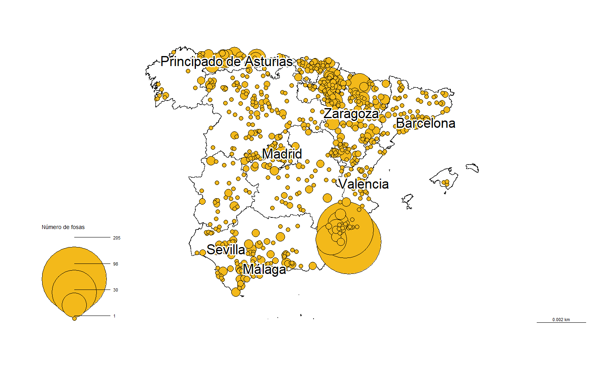

Las víctimas
de la memoria
Las barreras para acceder a datos de la guerra civil española y el franquismo lastran al país casi un siglo después
Fausto Canales enterró a su padre hace poco más de un mes. Lo hizo tras una búsqueda que comenzó en 1999, pero que se extiende casi los 90 años que él mismo va a cumplir el próximo mes de . Después de que fueran a buscar a su padre una noche a casa cuando él tenía dos años y medio no ha podido despedirse de él hasta ahora. “No había rastro ninguno, porque se los llevaban y desaparecían”, explica.
A su juicio, desde entonces existe “un manto de silencio y temor” en torno a la información sobre las víctimas de la guerra civil española y de la dictadura franquista, que se suma a la destrucción o ausencia de documentos y a las dificultades que supone el acceso a los datos que sí están disponibles hoy en día, ya sea por encontrarse desperdigados por todo el país, la falta de digitalización o por la necesidad de pagar para obtener algunos informes.
Esos obstáculos que se empezaron a generar en complican, todavía hoy en día, que personas como Canales puedan comenzar a cerrar unas heridas abiertas desde hace casi un siglo. Aunque él, tras más de veinte años de incansable búsqueda de respuestas, ha logrado una reparación, junto a su padre asesinaron a otras nueve personas, de las que aún faltan tres por encontrar.
La de Valerico Canales Jorge es solo una fosa de las 3.332 que contabiliza el Ministerio de la Presidencia, Relaciones con las Cortes y Memoria Democrática (MPR) en su página web.
Es, además, una de las 499 que constan como trasladadas al Valle de Cuelgamuros —antes llamado Valle de los Caídos, nombre modificado con la ley de memoria democrática en —.
El desplazamiento de los cuerpos, entre los que se incluyen civiles republicanos ejecutados por las fuerzas franquistas, se realizó a partir de “sin permiso ni conocimiento de sus familiares”, como indica la web de Patrimonio Nacional.
Tan solo en Cuelgamuros, situado en el municipio madrileño de San Lorenzo de El Escorial, las víctimas alcanzan las 33.847 personas, 12.000 de las cuales aún están sin identificar.
La memoria, clave para encontrar a las víctimas
La situación de España no equivale a la de otras democracias. En Argentina, solo dos años después de la dictadura militar que dejó 30.000 muertos y desaparecidos, se celebró un juicio a las juntas militares por los crímenes cometidos.
Ocho años antes, en , España, sin embargo, publicaba en el Boletín Oficial del Estado español publicó la ley de amnistía, clave durante la transición, pero que es calificada por organizaciones como Amnistía Internacional como “un impedimento para investigar las graves violaciones a los derechos humanos cometidas en España durante la Guerra Civil y el franquismo”.
Emilio Silva, presidente de la Asociación para la Recuperación de la Memoria Histórica (ARMH), destaca que, mientras el Gobierno desclasifica documentos relativos al golpe de Estado en Chile, “nosotros tenemos una ley de secretos oficiales del año 68”, momento en el que Franco todavía vivía.
Con este ejemplo, resalta la dificultad de hallar la información sobre las víctimas del franquismo y de la guerra civil española. Como explica, la mayoría de los documentos todavía se encuentran repartidos por numerosas localizaciones del país, aún sin digitalizar y con difícil acceso para la mayoría de la población.
“Las instituciones no facilitan nada”, asegura Silva, por lo que, en el caso de buscar información sobre las víctimas de ese período de la historia, “te tienes que meter en un laberinto” que va más allá de las fuentes documentales y las cifras, para recurrir a las narraciones orales de las personas que vivieron en esa época y que aún viven y quieren hablar de ello.
“¿Qué ha hecho esa memoria? Pues en nuestro caso llevarnos a 100 fosas”, manifiesta el presidente de la ARMH, quien opina que, mediante esos testimonios, se produce “el encuentro entre la palabra ‘memoria’ y la palabra ‘historia’”.
Los desaparecidos tras los datos
Así, para hallar los datos del pasado, es necesario muchas veces recurrir a la memoria. Así lo hizo Fausto Canales, quien logró información sobre la ubicación de la fosa común de su padre gracias a las respuestas de quienes se mostraron dispuestos a recordar y narrar.
Estas declaraciones llevaron a Canales hacia otros testimonios, restos y documentos. Documentos como los que registra Hernán Fernández-Barriales López en el buscador de víctimas y represaliados buscar.combatientes.es.
Pese a que Fernández-Barriales desarrolló su carrera como ingeniero químico, su interés en la memoria tiene origen en su infancia, cuando en su casa se hablaba de cómo al padre de su abuela, su bisabuelo, Domingo López Blanco, “lo había fusilado Franco” en . Fue a partir de los 20 años cuando Fernández-Barriales comenzó una investigación más seria, con el fin de que la historia “no cayera en el olvido”.
Domingo López Blanco,
Así comenzaba la ficha del bisabuelo de Fernández-Barriales en el expediente de quintas, que seguía con el cargo que ocupaba…
…PRESIDENTE del comité…
…y los hechos de los que se le acusaban durante su permanencia al frente del comité…
se cometieron QUINCE ASESINATOS.
Imagen de la ficha del expediente de quintas de Domingo López Blanco. Fuente: Hernán Fernández-Barriales.
Razón por la que, finalmente, fue ejecutado, como se recoge en la relación de las penas capitales impuestas en el territorio de Badajoz, publicada en el contexto de la Auditoría de Guerra de la Primera Región Militar, documento al que remite Fernández-Barriales, y que se enmarca dentro del Archivo General Militar de Ávila.
Domingo López Blanco, 35 años...
Muerte ejecutada el
Informe de las penas capitales impuestas en Badajoz. Fuente: Hernán Fernández-Barriales.
López fue señalado como responsable de la muerte de 15 personas “de derechas” mientras era miembro del consejo municipal de Valdecaballeros durante el período republicano. Sin embargo, su bisnieto señala que en las declaraciones del juicio “al menos dos personas de derechas salen en su defensa diciendo que fue gracias a él que pudieron escapar a zona franquista”.
Según Fernández-Barriales, la investigación ha ayudado a su abuela, que, pese a recordar a su padre con cariño, “le daba vergüenza hablar de él abiertamente porque para que maten a alguien de tu familia algo muy terrible ha tenido que hacer”. “Ha cambiado su percepción, ahora de orgullo total y de más tranquila, de no tener nada que ocultar y de poder estar orgullosa de su padre”, dice.
Un trabajo que requiere encontrar la aguja en un pajar
Pese a que para Fernández-Barriales todo el esfuerzo merece la pena, el trabajo de búsqueda e investigación no es tarea sencilla. Para empezar, implica bucear entre numerosos documentos que se encuentran distribuidos por todo el país.
Además, como indica Fernán dez-Barriales, cada archivo “tiene sus condiciones de acceso o de reproducción”. Incluso la copia de algunos de ellos, en el caso de no poder desplazarse al lugar, supone un coste económico, del que el ingeniero químico pone un ejemplo: “Te cobran 36 céntimos por página y hay expedientes que tienen más de 500 páginas”. El precio varía según el tipo de reproducción que se desee y, por ejemplo, en el Archivo de la Real Chancillería de Valladolid llega a cinco euros por imagen en el caso de que lo que se desee sea una imagen digital de alta resolución.
Se encuentran barreras incluso en el caso de acudir a la sala para obtener las copias allí, ya que, aunque todos los archivos estatales disponen de un servicio de autocopias de los documentos, el número máximo de imágenes permitidas es de 60 por persona en el conjunto de los informes que se hayan consultado en un día.
El buscador de Fernández-Barriales resuelve parte de estos problemas a quienes siguen sus pasos y quieren encontrar información sobre familiares desaparecidos o represaliados. Ahora tan solo deben introducir el nombre o alguna referencia, como un lugar, para buscar entre los más de seis millones de registros que Fernández-Barriales y otro equipo de 20 voluntarios continúan ampliando.
De hecho, nombres como el de Valerico siguen sin aparecer pues o bien no existen documentos al respecto o aún no se han recopilado.
Estas inscripciones incluyen casi 700.000 nombres distintos, aunque algunos pueden pertenecer a las mismas personas, por haberse registrado de formas diferentes pese a corresponder al mismo individuo. Un ejemplo es José García García, nombre que más se repite (148 veces), lo que quiere decir que es la persona con más documentos asociados.
Sin embargo, probablemente sean varias personas con el mismo nombre, para lo que es necesario mirar otros datos. Además, cada una de esas personas también podrían estar registrados bajo otra denominación, como José García (sin el segundo apellido, con 139 registros) o simplemente como García (con 121 registros en el buscador).
Aunque el ingeniero químico cree que algunas de las complicaciones que se encuentran pueden deberse a la intención de obstaculizar investigaciones sobre la Guerra Civil Española y la dictadura franquista, considera que la causa principal de los “diseños horribles” de algunas bases de datos públicas y el retraso en la digitalización es la “falta de interés en general” en España. “No es que sea específicamente contra la memoria”, opina.
Un país marcado por el desconocimiento histórico
En último término, los obstáculos generan una especie de vacío, que se relaciona con el silencio extendido durante décadas. Un silencio que, si se alarga demasiado, hace que “las dudas se vayan convirtiendo en certezas”, según Fernández-Barriales.
Para evitarlo, la educación juega un papel importante. Sin embargo, profesores de historia consultados para un artículo académico en 2022 consideran que el tratamiento histórico en los manuales escolares de historia acerca de la guerra civil, la dictadura y la transición a la democracia “sigue siendo superficial”. De hecho, solo dos de 39 docentes que participaron en el estudio reconocieron haber tratado la memoria histórica “de manera específica” en sus clases.
Por su parte, otro artículo publicado el mismo año hace referencia a la perspectiva de los estudiantes. Su autor Enrique Javier Díez Gutiérrez, de la Universidad de León, expone en el texto que “no siempre se llega a estos temas o, a veces, se dan por encima”, respecto al conocimiento de los alumnos al terminar bachillerato.
“Todo eso tiene montones de consecuencias que son inmateriales, pero que condicionan a una sociedad”, subraya Silva. Según el presidente de la Asociación para la Recuperación de la Memoria Histórica, algunos de los efectos son la revictimización de las víctimas o los cambios en “la lectura” que se hace de un país en el que, a su juicio, se normalizan actos “que en una democracia no deberían pasar”. Algo que afecta a “a la política, a la educación, a las emociones de las familias…”. “Es gente que se muere sin saber”, determina.
El camino no termina aquí
Este 15 de septiembre de 2023, más de 40 años después del final de la transición a la democracia, un juzgado tomó declaración por primera vez a una víctima de torturas durante la dictadura, como recogió Amnistía Internacional.
Tanto Emilio Silva como Hernán Fernández-Barriales exigen al Estado una mayor transparencia. “No han hecho un directorio de lo que hay: no puedo pedir porque no sé lo que hay”, reclama el primero, mientras que el segundo considera clave invertir en más recursos para digitalizar los documentos existentes o facilitar el trabajo de los archiveros. “Eso ayudaría a desenmascarar cierto discurso que no se sostiene y que consiste en quitarle hierro a lo que sucedió”, cree Fernández-Barriales.
Si bien el presidente de la ARMH centra la responsabilidad sobre el Estado, Jorge Moreno, antropólogo y profesor de la Universidad Nacional de Educación a Distancia (UNED), cree que no todo el peso recae sobre los gobiernos. De hecho, apunta a un “cruce burocrático” entre las familias, las instituciones locales, provinciales y regionales o las asociaciones.
Aun así, Moreno cree imprescindible que los distintos Ejecutivos proporcionen su ayuda en el camino hacia la reparación. “Sin el apoyo institucional es imposible hacer algo serio”, incide.
Canales se muestra de acuerdo y cree que sin el Gobierno de la pasada legislatura habría sido más complejo lograr, por fin, enterrar a su padre. Sin embargo, cree que aún queda camino por recorrer, el cual pasa por “la eliminación efectiva de la Fundación de la Santa Cruz del Valle de los Caídos, darle un nuevo estatus jurídico a todo este tema y hacer todo lo que está pendiente de resignificar”.
“Sería conveniente, incluso aunque sea a estas alturas, hacer una comisión de la verdad porque es una forma de justicia restaurativa”, opina.
Aun así, finalmente, los restos de su padre Valerico descansan tras el entierro del pasado mes de agosto, lo que Canales considera “un éxito” tanto para las familias como para el conjunto de la ciudadanía española.“La reparación moral es saber la verdad. El reconocimiento de los hechos sí que hubiera sido una reparación moral”, concluye.
Fausto Canales recibiendo los restos de su padre. Fuente: cedida.
Metodología
Este reportaje se enmarca dentro del trabajo final de Cristina Alonso Pascual para el curso 2022-23 del Máster de Formación Permanente en Periodismo y Visualización de Datos de la Universidad de Alcalá.